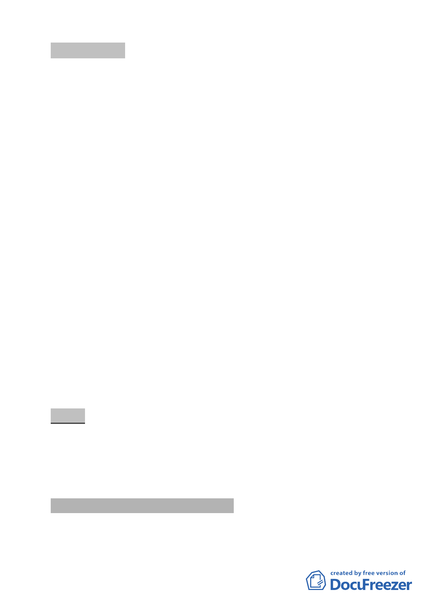

討論事項 十四
案名：劃定臺北市士林區陽明段一小段 445 地號等 42 筆土地為更
新單元
案情概要說明：
一、本更新單元位於士林區中山北路 5 段 733 巷、中山北路 5 段
699 巷、中山北路 5 段 699 巷 8 弄及前街所圍完整街廓，面積
4,091 平方公尺。
二、本更新單元土地使用分區為第三種住宅區，土地包括公有及
私有，建物均屬私有，範圍內神農宮為本市歷史建築。
三、本案除歷史建築座落範圍（面積 1,630 平方公尺）以「整建維
護」進行更新外，其餘土地將於東側留設 4 公尺以上無遮簷
人行道、北側及西側留設 2 公尺以上無遮簷人行道，另將協
助開闢西南側計畫道路（前街）部分路段。
四、本案市府 98 年 2 月 19 日以府都新字第 09731300900 號函送
到會。
五、申請單位：財團法人台北市士林神農宮。
六、辦理單位：臺北市政府。
七、法令依據：都市計畫法第 66 條；都更條例第 5 條、第 6 條、
第 8 條、第 11 條；北市都市更新自治條例第 15 條。
八、本更新單元業經市府審查符合更新單元劃定基準及環境評估
標準。
決議：
一、本案更新單元劃定範圍照案通過。
二、本案計畫書第 10 頁「伍」敘明未來將協助開闢西側計畫道路
（前街），惟計畫書第 13 頁規劃構想圖僅標註開闢 552 地號
之計畫道路，請統一計畫書文字與圖面內容，以資明確。
叁、本會審查劃定更新單元附帶決議
有關變更已劃定更新單元範圍之程序簡化問題，請都市更
新處衡酌整體處理情形，以專案方式提會報告。
- 14 -